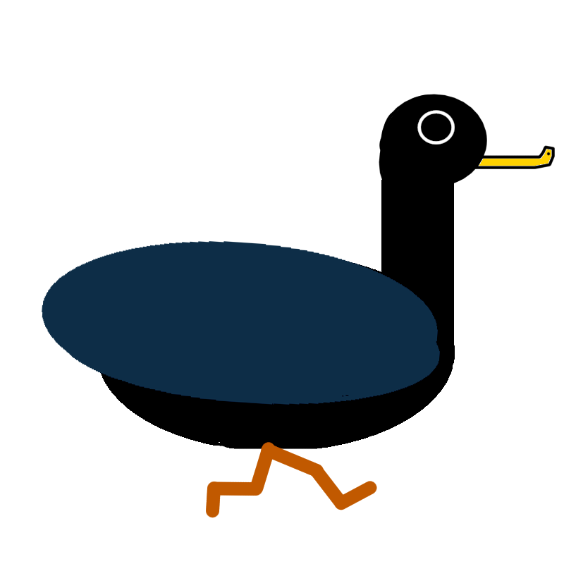

Duck Warrior
Duck Warrior is a 2D platformer where you control a duck with a knife strapped to his chest attempting to get his hat back. Each stage is an arena, where you have to kill waves of enemies before facing off against a boss. It was a fun project with an absurd concept that made my first game in Unity a memorable one.
Initial Concept

The starting inspiration for Duck Warrior was the game “Joust”, an Atari game where you joust on an ostrich. From this, we derived two things: ramming into enemies in order to kill them, and birds. Unlike its inspiration, however, Duck Warrior focuses less on 1v1 battles against similar enemies and focuses more on level progression and boss fights.
Player Movement
In the spirit of the game’s bird theme, we wanted to make the player’s jumping fluttery. By making the jumps short and quick, we managed to not only simulate the flapping of wings, but to also give the player finer control while jumping. Speed was also an important aspect, since the way to kill enemies is by ramming into them, so the controls needed to feel fast but not uncontrollable.
Player Movement Snippet
```csharp public void Move(Vector2 direction) //function that handles the player movement, as well as movement animations. { if (Mathf.Abs(direction.x) > .01f) //if input in the x direction is detected... { rb.velocity = new Vector2(moveSpeed * direction.x, rb.velocity.y); //...add velocity in that direction... playerAnimator.SetBool("walkingRight", true); //...and play the walking animation. } else //if no input is detected... { rb.velocity = new Vector2(0f, rb.velocity.y); //...stop any x movement... playerAnimator.SetBool("walkingRight", false); //...stop the walking animation... playerAnimator.SetBool("jumping", false); //...and stop the jumping animation. } if (Input.GetKeyDown("j")) //if the j key is pressed... { rb.AddForce(new Vector2(0, 3), ForceMode2D.Impulse); //...add upward force to make the player jump... playerAnimator.SetBool("jumping", true); //...and play the jumping animation. } } ```Level Design
The general design of the game was to be set in arena levels where the player must defeat all the enemies before taking on the boss. Spawning in new enemies after the initial enemies allowed for the fairly compact levels to still throw new obstacles at the player, and to provide a greater challenge.
Enemy Design


The enemies either patrol an area of the level, or chase after the player. While the first level’s enemies are the least threatening, with their weapons at a fixed position, the second and third level’s enemies swing their weapons, making them a bigger threat.
Enemy Chaser Movement Snippet
{% highlight csharp %} void Update() { if(GameObject.Find("PlayerDuck").transform.position.x < transform.position.x) //if the player is to the left... { playerX = -1; //...set playerX in the left direction; } else if(GameObject.Find("PlayerDuck").transform.position.x > transform.position.x) //else if the player is to the right... { playerX = 1; //...set playerX in the right direction; } else //else if the player is neither to the left nor right... { playerX = 0; //...set playerX in neither direction. } if(GameObject.Find("PlayerDuck").transform.position.y < transform.position.y) //if the player is below... { playerY = -1; //...set playerY to be below; } else if (GameObject.Find("PlayerDuck").transform.position.y > transform.position.y) //else if the player is above... { playerY = 1; //...set playerY to be above; } else //else if the player is neither below nor above... { playerY = 0; //...set playerY to be neither below nor above. } Move(new Vector2(playerX, playerY)); //move towards the player based on their x and y directions relative to this object. FlipSprite(); //flip this object's sprite based on its current movement. } {% endhighlight %}Boss Design
Designing the bosses was a highlight for me, as coming up with new ways to make each boss fight different and challenging was fun. Each boss requires a different strategy to defeat it, with each boss being harder than the last, culminating with a multi-phase final boss fight.
Final Boss Health Snippet
{% highlight csharp %} void Update() { if (currentHealth <= -1) //if boss's health is below 0... { GameObject.Find("DeathSound").GetComponent